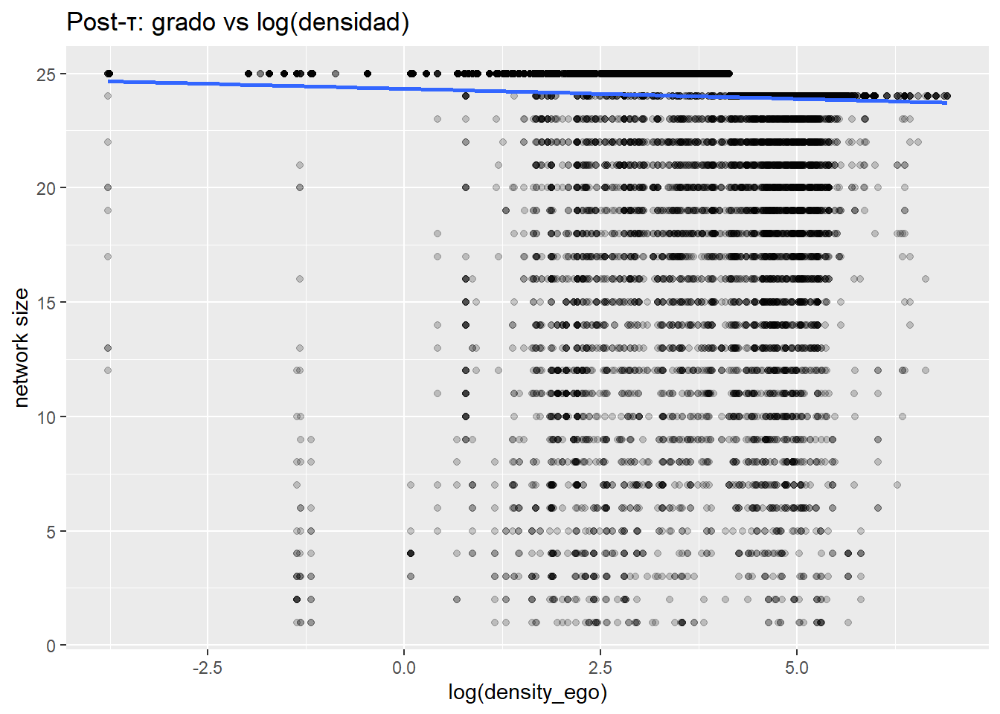
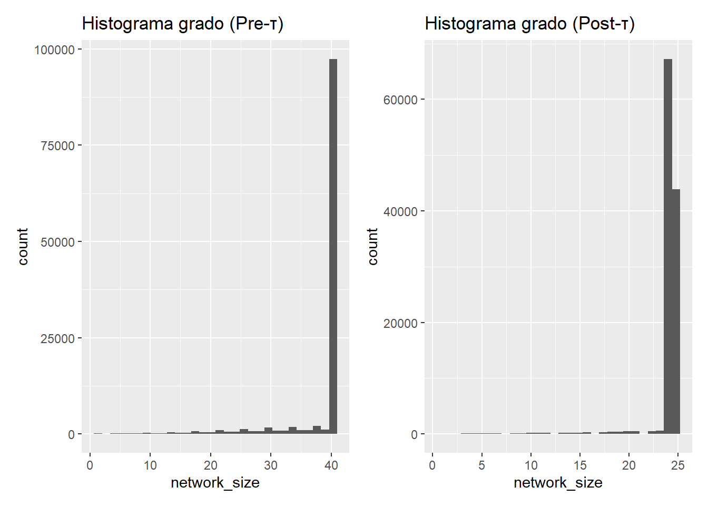
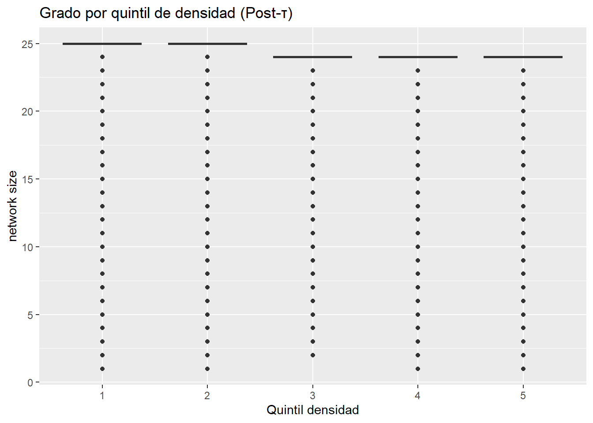
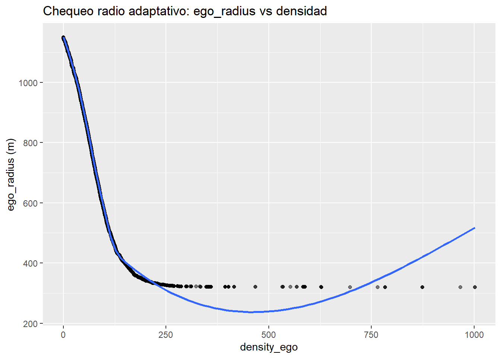

suppressPackageStartupMessages({
library(tidyverse) # dplyr, purrr, tibble, readr, etc.
library(sf)
library(nngeo)
library(future)
library(future.apply)
})
# 0) UTILIDADES ---------------------------------------------------------------
log_message <- function(msg, error = FALSE) {
ts <- format(Sys.time(), "%Y-%m-%d %H:%M:%S")
txt <- sprintf("[%s] %s", ts, msg)
if (error) warning(txt, call. = FALSE) else cat(txt, "\n")
}
require_cols <- function(x, cols, name = "obj") {
faltan <- setdiff(cols, names(x))
if (length(faltan)) stop(sprintf("Faltan cols en %s: %s", name, paste(faltan, collapse = ", ")), call. = FALSE)
}
# 1) RADIO ADAPTATIVO ---------------------------------------------------------
compute_adaptive_radius <- function(df,
r_min = 350, r_max = 950,
gamma_shape = 1.9,
eta_mix = 0.95) {
require_cols(df, c("density"), "compute_adaptive_radius(df)")
d <- df$density
rnk <- rank(d, ties.method = "average") / length(d) # [0,1]
# mezcla lineal/potencia: comprime en densas, expande en ralas
w <- eta_mix * (1 - rnk) + (1 - eta_mix) * ((1 - rnk)^gamma_shape)
pmax(r_min, pmin(r_max, r_min + (r_max - r_min) * w))
}
# 2) MOTOR NN (nngeo o RANN) --------------------------------------------------
do_nn_search <- function(batch_sf, ref_sf, maxdist, engine = c("nngeo", "rann")) {
engine <- match.arg(engine)
X <- st_coordinates(batch_sf)
Y <- st_coordinates(ref_sf)
if (engine == "nngeo") {
nn <- nngeo::st_nn(batch_sf, ref_sf, k = nrow(ref_sf), maxdist = maxdist,
returnDist = TRUE, progress = FALSE)
return(nn) # lista con $nn y $dist
}
if (!requireNamespace("RANN", quietly = TRUE)) {
stop("engine='rann' requiere RANN. Instala con install.packages('RANN')", call. = FALSE)
}
k_try <- min(512L, nrow(ref_sf))
fit <- RANN::nn2(data = Y, query = X, k = k_try)
idx_list <- vector("list", nrow(batch_sf))
dist_list <- vector("list", nrow(batch_sf))
for (i in seq_len(nrow(batch_sf))) {
di <- fit$nn.dists[i, ]
ki <- fit$nn.idx[i, ]
ok <- which(di <= maxdist)
if (length(ok)) {
idx_list[[i]] <- ki[ok]
dist_list[[i]] <- di[ok]
} else {
idx_list[[i]] <- integer(0)
dist_list[[i]] <- numeric(0)
}
}
list(nn = idx_list, dist = dist_list)
}
# 3) DÍADAS POR LOTE + pesos + cap local --------------------------------------
build_dyads_batch <- function(batch_sf, ref_sf, nn_res,
decay_type = c("none", "linear", "exponential"),
alpha = 0.001,
ego_radius_vec,
k_cap = 45) {
decay_type <- match.arg(decay_type)
batch_tb <- batch_sf %>% st_drop_geometry()
ref_tb <- ref_sf %>% st_drop_geometry()
require_cols(batch_tb, c("id", "comuna", "ego_radius", "density"), "batch_tb")
require_cols(ref_tb, c("id", "comuna", "density"), "ref_tb")
purrr::map2_dfr(nn_res$nn, seq_along(nn_res$nn), function(nn_idx, ii) {
if (length(nn_idx) == 0) return(tibble())
di <- nn_res$dist[[ii]]
ref_sel <- ref_tb[nn_idx, , drop = FALSE]
dy <- tibble(
ego_id = as.character(batch_tb$id[ii]),
alter_id = as.character(ref_sel$id),
ego_comuna = batch_tb$comuna[ii],
alter_comuna = ref_sel$comuna,
ego_radius = ego_radius_vec[ii],
density_ego = batch_tb$density[ii],
density_alt = ref_sel$density,
distance = as.numeric(di)
) %>%
filter(distance <= ego_radius) %>%
mutate(weight = dplyr::case_when(
decay_type == "linear" ~ pmax(0, 1 - distance / ego_radius),
decay_type == "exponential" ~ exp(-alpha * distance),
TRUE ~ 1
))
if (!nrow(dy)) return(tibble())
if (nrow(dy) > k_cap) dy <- dy %>% arrange(distance) %>% slice_head(n = k_cap)
dy
})
}
# 4) DÍADAS ADAPTATIVAS (paralelismo + modo muestra) --------------------------
create_adaptive_dyads <- function(student_data,
reference_data,
crs_projected = 32719,
global_max_distance = 2000,
batch_size = 12000,
decay_type = "exponential",
alpha = 0.001,
engine = c("nngeo", "rann"),
r_min = 380, r_max = 950,
gamma_shape = 1.9, eta_mix = 0.95,
k_cap = 45,
workers = max(1, parallel::detectCores() - 1)) {
engine <- match.arg(engine)
need <- c("mrun", "lat_con_error", "lon_con_error", "comuna", "density")
require_cols(student_data, need, "student_data")
require_cols(reference_data, need, "reference_data")
prep_sf <- function(df) {
df %>%
select(mrun, lat_con_error, lon_con_error, comuna, density) %>%
rename(id = mrun, lat = lat_con_error, lon = lon_con_error) %>%
st_as_sf(coords = c("lon", "lat"), crs = 4326) %>%
st_transform(crs_projected)
}
ego_sf <- prep_sf(student_data) %>%
mutate(ego_radius = compute_adaptive_radius(st_drop_geometry(.),
r_min, r_max, gamma_shape, eta_mix))
ref_sf <- prep_sf(reference_data)
if (!nrow(ego_sf) || !nrow(ref_sf))
stop("No hay puntos suficientes para procesar.", call. = FALSE)
N <- nrow(ego_sf)
idx_split <- split(seq_len(N), ceiling(seq_len(N) / batch_size))
oplan <- future::plan()
on.exit(future::plan(oplan), add = TRUE)
plan(multisession, workers = workers)
future_lapply(seq_along(idx_split), future.seed = TRUE, function(bi) {
ridx <- idx_split[[bi]]
batch <- ego_sf[ridx, ]
buf <- st_buffer(st_union(batch), global_max_distance)
ref_crop <- suppressWarnings(st_intersection(ref_sf, buf))
if (!nrow(ref_crop)) return(tibble())
nn <- do_nn_search(batch, ref_crop, maxdist = global_max_distance, engine = engine)
dy <- build_dyads_batch(
batch_sf = batch,
ref_sf = ref_crop,
nn_res = nn,
decay_type = decay_type,
alpha = alpha,
ego_radius_vec = st_drop_geometry(batch)$ego_radius,
k_cap = k_cap
)
if (getOption(".tuner_verbose", FALSE)) {
log_message(sprintf(" Lote %d/%d listo (filas %s).",
bi, length(idx_split), format(nrow(dy), big.mark = ",")))
}
dy
}) %>% bind_rows()
}
# 5) PIPELINE HISTÓRICO + DIAGNÓSTICOS ----------------------------------------
run_compensated_pipeline <- function(samples, target_year,
engine = c("nngeo", "rann"),
workers = max(1, parallel::detectCores() - 1),
batch_size = 12000,
global_max_distance = 2000,
decay_type = "exponential", alpha = 0.001,
r_min = 380, r_max = 950,
gamma_shape = 1.9, eta_mix = 0.95,
k_min = 15, k_cap = 45,
sample_rate = 1.0) {
engine <- match.arg(engine)
key <- paste0("sample_", target_year)
if (!key %in% names(samples)) stop("Año objetivo no encontrado en 'samples'.")
egos_full <- samples[[key]]
egos <- if (sample_rate < 1) { set.seed(2024); egos_full %>% slice_sample(prop = sample_rate) } else egos_full
ref_keys <- setdiff(names(samples), key)
all_dyads <- vector("list", length(ref_keys))
log_message(sprintf("Iniciando histórico para %s.", target_year))
for (i in seq_along(ref_keys)) {
rk <- ref_keys[i]
ref_df <- samples[[rk]]
log_message(sprintf("Procesando ref %s vs. egos %s ...", rk, target_year))
dyi <- create_adaptive_dyads(
student_data = egos,
reference_data = ref_df,
global_max_distance = global_max_distance,
batch_size = batch_size,
decay_type = decay_type,
alpha = alpha,
engine = engine,
r_min = r_min, r_max = r_max,
gamma_shape = gamma_shape, eta_mix = eta_mix,
k_cap = k_cap,
workers = workers
) %>% mutate(reference_year = readr::parse_number(rk))
all_dyads[[i]] <- dyi
}
dyads <- bind_rows(all_dyads)
if (!nrow(dyads)) stop("No se generaron díadas.", call. = FALSE)
sizes <- dyads %>%
group_by(ego_id, reference_year) %>%
summarise(network_size = n(),
ego_radius = first(ego_radius),
density_ego = first(density_ego),
.groups = "drop")
diag_fit <- lm(network_size ~ log(pmax(density_ego, 1e-6)), data = sizes)
beta_logdens <- unname(coef(diag_fit)[2])
cv_tab <- sizes %>%
mutate(q = ntile(density_ego, 5)) %>%
group_by(q) %>%
summarise(mean_degree = mean(network_size),
sd_degree = sd(network_size),
cv = sd_degree / mean_degree,
.groups = "drop")
by_year <- sizes %>%
group_by(reference_year) %>%
summarise(n_egos = n(),
mean_size = mean(network_size),
sd_size = sd(network_size),
p10 = quantile(network_size, .10),
p50 = quantile(network_size, .50),
p90 = quantile(network_size, .90),
mean_radius = mean(ego_radius),
mean_density = mean(density_ego),
.groups = "drop")
pct_ge_cap <- mean(sizes$network_size >= k_cap)
pct_le_min <- mean(sizes$network_size <= k_min)
cv_range <- diff(range(cv_tab$cv, na.rm = TRUE))
list(
dyads = dyads,
sizes = sizes,
by_year = by_year,
diag = list(
beta_logdens = beta_logdens,
cv_table = cv_tab,
cv_range = cv_range,
pct_ge_cap = pct_ge_cap,
pct_le_min = pct_le_min
),
meta = list(
target_year = target_year,
engine = engine,
batch_size = batch_size,
gmax = global_max_distance,
decay_type = decay_type, alpha = alpha,
r_min = r_min, r_max = r_max,
gamma_shape = gamma_shape, eta_mix = eta_mix,
k_min = k_min, k_cap = k_cap,
sample_rate = sample_rate
)
)
}
# 6) LOOKUPS + CAP por QUINTIL -------------------------------------------------
build_q_lookup <- function(res_obj, all_samples) {
sizes0 <- res_obj$sizes
if (!"density_ego" %in% names(sizes0)) {
target_year <- unique(res_obj$dyads$reference_year)[1]
sample_target <- all_samples[[paste0("sample_", target_year)]]
id_col <- intersect(names(sample_target), c("ego_id", "mrun", "id"))[1]
denscol <- intersect(names(sample_target), c("density_ego", "density", "mean_density", "densidad", "dens"))[1]
stopifnot(length(id_col) == 1, length(denscol) == 1)
ego_density_lu <- sample_target %>%
transmute(ego_id = as.character(.data[[id_col]]),
density_ego = as.numeric(.data[[denscol]])) %>%
distinct(ego_id, .keep_all = TRUE)
} else {
id_col <- intersect(names(sizes0), c("ego_id", "mrun", "id"))[1]
ego_density_lu <- sizes0 %>%
transmute(ego_id = as.character(.data[[id_col]]),
density_ego = as.numeric(.data[["density_ego"]])) %>%
distinct(ego_id, .keep_all = TRUE)
}
q_lu <- ego_density_lu %>%
mutate(q_int = ntile(density_ego, 5),
qdens = factor(paste0("Q", q_int), levels = paste0("Q", 1:5))) %>%
select(ego_id, density_ego, qdens)
q_lu
}
cap_table_by_quintile <- function(dyads, q_lu, k_min, k_cap, q_cap) {
# Aseguramos que ego_id sea de tipo character en ambos dataframes
dyads <- dyads %>% mutate(ego_id = as.character(ego_id))
q_lu <- q_lu %>% mutate(ego_id = as.character(ego_id))
deg_raw <- dyads %>% count(ego_id, reference_year, name = "deg_raw")
dyads %>%
distinct(ego_id, reference_year) %>%
left_join(deg_raw, by = c("ego_id", "reference_year")) %>%
left_join(q_lu, by = "ego_id") %>%
group_by(qdens) %>%
summarise(
cap_q = pmin(k_cap, pmax(k_min, round(quantile(deg_raw, q_cap, na.rm = TRUE)))),
.groups = "drop"
)
}
# 7) RECORTE POR MASA (τ) + PISO BLANDO + RESCATE -----------------------------
apply_mass_cut <- function(res_obj, q_lu, tau_map, k_soft_min_q,
k_min = 15, k_cap = 45, q_cap = 0.85) {
stopifnot(all(c("dyads", "sizes") %in% names(res_obj)))
# Aseguramos que ego_id sea de tipo character en todos los dataframes
res_obj$dyads <- res_obj$dyads %>% mutate(ego_id = as.character(ego_id))
res_obj$sizes <- res_obj$sizes %>% mutate(ego_id = as.character(ego_id))
q_lu <- q_lu %>% mutate(ego_id = as.character(ego_id))
cap_by_q <- cap_table_by_quintile(res_obj$dyads, q_lu, k_min, k_cap, q_cap)
cap_per_ego <- q_lu %>%
left_join(cap_by_q, by = "qdens") %>%
mutate(
cap_ego = coalesce(cap_q, k_cap),
tau_q = unname(tau_map[as.character(qdens)]) %>% as.numeric(),
ksoft_q = unname(k_soft_min_q[as.character(qdens)]) %>% as.numeric()
) %>%
tidyr::replace_na(list(tau_q = 0.95, ksoft_q = 24)) %>%
select(ego_id, density_ego, qdens, cap_ego, tau_q, ksoft_q)
use_weight <- "weight" %in% names(res_obj$dyads)
dy_core <- res_obj$dyads %>%
left_join(cap_per_ego, by = "ego_id") %>%
group_by(ego_id, reference_year) %>%
{ if (use_weight) arrange(., desc(weight), .by_group = TRUE)
else arrange(., distance, .by_group = TRUE) } %>%
mutate(
mass = if (use_weight) cumsum(coalesce(weight, 0)) else cumsum(1) / n(),
tau = first(coalesce(tau_q, 0.95)),
cap_e = first(coalesce(cap_ego, k_cap)),
n_soft = pmax(k_min, first(coalesce(ksoft_q, 24))),
take = (mass <= tau | row_number() <= n_soft) & row_number() <= cap_e
) %>%
filter(take) %>%
ungroup() %>%
select(-mass, -tau, -cap_e, -n_soft, -take)
deg_now <- dy_core %>% count(ego_id, reference_year, name = "deg")
need_rescue <- res_obj$dyads %>%
distinct(ego_id, reference_year) %>%
left_join(deg_now, by = c("ego_id", "reference_year")) %>%
mutate(deg = coalesce(deg, 0L)) %>%
filter(deg < k_min)
if (nrow(need_rescue) > 0) {
already <- dy_core %>% transmute(ego_id, reference_year, alter_id, already = TRUE)
dy_rescue <- res_obj$dyads %>%
inner_join(need_rescue %>% select(ego_id, reference_year, deg),
by = c("ego_id", "reference_year")) %>%
left_join(already, by = c("ego_id", "reference_year", "alter_id")) %>%
filter(is.na(already)) %>%
group_by(ego_id, reference_year) %>%
{ if (use_weight) arrange(., desc(weight), .by_group = TRUE)
else arrange(., distance, .by_group = TRUE) } %>%
mutate(rn = row_number()) %>%
filter(rn <= k_min) %>%
ungroup() %>%
select(-deg, -already, -rn)
} else dy_rescue <- dy_core[0, ]
dy_final <- bind_rows(dy_core, dy_rescue) %>%
distinct(ego_id, reference_year, alter_id, .keep_all = TRUE)
sizes_final <- dy_final %>%
count(ego_id, reference_year, name = "network_size") %>%
left_join(cap_per_ego, by = "ego_id")
beta_log_final <- {
dd <- sizes_final %>% mutate(logdens = log(pmax(density_ego, 1e-6)))
fit <- tryCatch(lm(network_size ~ logdens, data = dd), error = function(e) NULL)
if (is.null(fit)) NA_real_ else unname(coef(fit)[["logdens"]])
}
cv_tab_final <- sizes_final %>%
mutate(q = ntile(density_ego, 5)) %>%
group_by(q) %>%
summarise(mean_degree = mean(network_size),
sd_degree = sd(network_size),
cv = sd_degree / mean_degree,
.groups = "drop")
cv_range_final <- diff(range(cv_tab_final$cv, na.rm = TRUE))
pct_ge_cap_final <- mean(sizes_final$network_size >= sizes_final$cap_ego, na.rm = TRUE)
pct_le_kmin_final <- mean(sizes_final$network_size <= k_min, na.rm = TRUE)
list(
dyads = dy_final,
sizes = sizes_final,
diag = list(
beta_logdens = beta_log_final,
cv_table = cv_tab_final,
cv_range = cv_range_final,
pct_ge_cap = pct_ge_cap_final,
pct_le_min = pct_le_kmin_final
)
)
}
# 8) TUNER (τ en Q1/Q5, piso blando en Q5) ------------------------------------
debug_tuner_inputs <- function(res_obj, q_lu) {
cat("dyads cols:\n"); print(names(res_obj$dyads))
cat("q_lu cols:\n"); print(names(q_lu))
cat("class(dyads$ego_id)=", class(res_obj$dyads$ego_id),
" | class(q_lu$ego_id)=", class(q_lu$ego_id), "\n")
cat("qdens table:\n"); print(table(q_lu$qdens, useNA="ifany"))
}
tune_tau_ksoft <- function(res_obj, q_lu, base_tau, base_soft,
deltas_tau = c(-0.005, 0, 0.005),
deltas_soft = c(0, 1, 2),
k_min = 15, k_cap = 45, q_cap = 0.85) {
stopifnot(all(c("dyads","sizes") %in% names(res_obj)))
# --- Normalización de ids y niveles ---
q_lvls <- paste0("Q", 1:5)
dyads <- res_obj$dyads %>%
dplyr::mutate(ego_id = as.character(ego_id) |> trimws())
q_lu2 <- (q_lu %||% tibble::tibble(ego_id = character(), density_ego = numeric(), qdens = character())) %>%
dplyr::transmute(
ego_id = as.character(ego_id) |> trimws(),
density_ego = as.numeric(density_ego),
qdens = as.character(qdens)
) %>%
dplyr::mutate(qdens = ifelse(is.na(qdens) | !qdens %in% q_lvls, "Q3", qdens),
qdens = factor(qdens, levels = q_lvls))
if (!all(names(base_tau) %in% q_lvls)) stop("base_tau debe tener nombres Q1..Q5.")
if (!all(names(base_soft) %in% q_lvls)) stop("base_soft debe tener nombres Q1..Q5.")
arrange_by <- function(.data, use_weight) {
if (use_weight) dplyr::arrange(.data, dplyr::desc(.data$weight), .by_group = TRUE)
else dplyr::arrange(.data, .data$distance, .by_group = TRUE)
}
# Cap por quintil robusto (aguanta q_lu vacío o parcial)
cap_table_by_quintile_safe <- function(dyads, q_lu2, k_min, k_cap, q_cap) {
deg_raw <- dyads %>% dplyr::count(ego_id, reference_year, name = "deg_raw")
egos_q <- q_lu2 %>% dplyr::select(ego_id, qdens)
base <- dyads %>%
dplyr::distinct(ego_id, reference_year) %>%
dplyr::left_join(egos_q, by = "ego_id") %>%
dplyr::mutate(qdens = forcats::fct_explicit_na(qdens, "Q3"),
qdens = forcats::fct_collapse(qdens, Q1="Q1",Q2="Q2",Q3="Q3",Q4="Q4",Q5="Q5")) %>%
dplyr::left_join(deg_raw, by = c("ego_id","reference_year"))
base %>%
dplyr::group_by(qdens) %>%
dplyr::summarise(
cap_q = pmin(k_cap, pmax(k_min, round(stats::quantile(deg_raw, q_cap, na.rm = TRUE)))),
.groups = "drop"
)
}
# Construye SIEMPRE params_per_ego para TODO el universo de egos en dyads
build_params_per_ego <- function(dyads, q_lu2, base_tau, base_soft, k_cap, k_min, q_cap){
universe <- dyads %>% dplyr::distinct(ego_id)
base_map <- universe %>%
dplyr::left_join(q_lu2, by = "ego_id") %>%
dplyr::mutate(
qdens = ifelse(is.na(qdens), "Q3", as.character(qdens)),
qdens = factor(qdens, levels = q_lvls),
density_ego = as.numeric(density_ego)
)
cap_by_q <- cap_table_by_quintile_safe(dyads, base_map %>% dplyr::select(ego_id, qdens), k_min, k_cap, q_cap)
params <- base_map %>%
dplyr::left_join(cap_by_q, by = "qdens") %>%
dplyr::mutate(
tau_q = as.numeric(base_tau[as.character(qdens)]),
ksoft_q = as.numeric(base_soft[as.character(qdens)]),
cap_ego = as.numeric(dplyr::coalesce(cap_q, k_cap))
) %>%
tidyr::replace_na(list(tau_q = 0.95, ksoft_q = 24, cap_ego = k_cap)) %>%
dplyr::select(ego_id, density_ego, qdens, tau_q, ksoft_q, cap_ego) %>%
dplyr::distinct(ego_id, .keep_all = TRUE)
# Garantiza columnas aunque q_lu viniera totalmente vacío
for (nm in c("tau_q","ksoft_q","cap_ego","density_ego","qdens")) {
if (!nm %in% names(params)) params[[nm]] <- NA_real_
}
params
}
run_once <- function(tau_try, ksoft_try) {
# Construye params por ego (completo)
base_tau2 <- base_tau; base_tau2[names(tau_try)] <- tau_try
base_soft2 <- base_soft; base_soft2[names(ksoft_try)]<- ksoft_try
params_per_ego <- build_params_per_ego(dyads, q_lu2, base_tau2, base_soft2,
k_cap = k_cap, k_min = k_min, q_cap = q_cap)
# Join robusto: si por alguna razón faltan, créalos vacíos y rellena
dy_joined <- dyads %>%
dplyr::left_join(params_per_ego, by = "ego_id")
for (nm in c("tau_q","ksoft_q","cap_ego")) {
if (!nm %in% names(dy_joined)) dy_joined[[nm]] <- NA_real_
}
dy_joined <- dy_joined %>%
dplyr::mutate(
tau_q = as.numeric(dplyr::coalesce(.data$tau_q, 0.95)),
ksoft_q = as.numeric(dplyr::coalesce(.data$ksoft_q, 24)),
cap_ego = as.numeric(dplyr::coalesce(.data$cap_ego, k_cap))
)
use_weight <- "weight" %in% names(dy_joined)
dy_core <- dy_joined %>%
dplyr::group_by(ego_id, reference_year) %>%
arrange_by(use_weight) %>%
dplyr::mutate(
tau_q = dplyr::first(.data$tau_q),
ksoft_q = dplyr::first(.data$ksoft_q),
cap_ego = dplyr::first(.data$cap_ego),
mass = if (use_weight) cumsum(dplyr::coalesce(.data$weight, 0))
else cumsum(1) / dplyr::n(),
tau = .data$tau_q,
cap_e = .data$cap_ego,
n_soft = pmax(k_min, .data$ksoft_q),
take = (mass <= tau | dplyr::row_number() <= n_soft) & dplyr::row_number() <= cap_e
) %>%
dplyr::filter(.data$take) %>%
dplyr::ungroup() %>%
dplyr::select(-mass, -tau, -cap_e, -n_soft, -take)
deg_now <- dy_core %>% dplyr::count(ego_id, reference_year, name = "deg")
need_rescue <- dy_joined %>%
dplyr::distinct(ego_id, reference_year) %>%
dplyr::left_join(deg_now, by = c("ego_id","reference_year")) %>%
dplyr::mutate(deg = dplyr::coalesce(.data$deg, 0L)) %>%
dplyr::filter(.data$deg < k_min)
if (nrow(need_rescue) > 0) {
already <- dy_core %>% dplyr::transmute(ego_id, reference_year, alter_id, already = TRUE)
dy_rescue <- dy_joined %>%
dplyr::inner_join(need_rescue %>% dplyr::select(ego_id, reference_year, deg),
by = c("ego_id","reference_year")) %>%
dplyr::left_join(already, by = c("ego_id","reference_year","alter_id")) %>%
dplyr::filter(is.na(.data$already)) %>%
dplyr::group_by(ego_id, reference_year) %>%
arrange_by(use_weight) %>%
dplyr::mutate(rn = dplyr::row_number()) %>%
dplyr::filter(.data$rn <= k_min) %>%
dplyr::ungroup() %>%
dplyr::select(-deg, -already, -rn)
} else dy_rescue <- dy_core[0, ]
dy_final <- dplyr::bind_rows(dy_core, dy_rescue) %>%
dplyr::distinct(ego_id, reference_year, alter_id, .keep_all = TRUE)
sizes_final <- dy_final %>%
dplyr::count(ego_id, reference_year, name = "network_size") %>%
dplyr::left_join(params_per_ego %>% dplyr::select(ego_id, cap_ego, density_ego), by = "ego_id")
beta_log <- {
dd <- sizes_final %>% dplyr::mutate(logdens = log(pmax(.data$density_ego, 1e-6)))
fit <- tryCatch(stats::lm(network_size ~ logdens, data = dd), error = function(e) NULL)
if (is.null(fit)) NA_real_ else unname(stats::coef(fit)[["logdens"]])
}
cv_tab <- sizes_final %>%
dplyr::mutate(q = dplyr::ntile(.data$density_ego, 5)) %>%
dplyr::group_by(q) %>%
dplyr::summarise(mean_degree = mean(.data$network_size),
sd_degree = sd(.data$network_size),
cv = sd_degree / mean_degree,
.groups = "drop")
tibble::tibble(
beta_logdens = beta_log,
cv_range = diff(range(cv_tab$cv, na.rm = TRUE)),
mean_deg = mean(sizes_final$network_size),
pct_ge_cap = mean(sizes_final$network_size >= sizes_final$cap_ego, na.rm = TRUE)
)
}
grid <- tidyr::crossing(
d_first = deltas_tau, # mover τ en Q1
d_last = deltas_tau, # mover τ en Q5
s_last = deltas_soft # aumento piso blando en Q5
)
purrr::pmap_dfr(as.list(as.data.frame(grid)), function(d_first, d_last, s_last) {
tau_try <- base_tau; names(tau_try) <- names(base_tau)
tau_try["Q1"] <- base_tau["Q1"] + d_first
tau_try["Q5"] <- base_tau["Q5"] + d_last
ksoft_try <- base_soft; names(ksoft_try) <- names(base_soft)
ksoft_try["Q5"] <- base_soft["Q5"] + s_last
out <- run_once(tau_try, ksoft_try)
dplyr::mutate(out, d_first = d_first, d_last = d_last, s_last = s_last)
}) %>%
dplyr::arrange(abs(.data$beta_logdens), .data$cv_range, .data$pct_ge_cap)
}Redes egocéntricas adaptativas: teoría, código completo y diagnósticos
Idea central. Queremos redes egocéntricas donde el tamaño de red (grado) sea comparable entre contextos, pese a que la densidad espacial varía. Para eso: 1) usamos radio adaptativo (más grande en ralas, más pequeño en densas) para igualar oportunidad de captura;
2) pero rompemos la relación mecánica densidad → grado con un recorte por masa (τ) + piso blando + cap por quintil, de modo que β ≈ 0 ennetwork_size ~ log(density_ego)y el CV del grado por quintil quede nivelado.
1. Código completo del pipeline
Este bloque define todo: utilidades, radio adaptativo, NN homogéneo, construcción de díadas, pipeline histórico, lookups por quintil, recorte por masa (τ), diagnósticos y tuner.
Parámetros y ejecución mínima
# Datos (ajusta rutas si es necesario)
# Leemos los datos de cada año
# Nota: Ajusta las rutas según donde tengas los archivos
sample_2019 <- read_csv("~/Repositorios/neighbors_school_choice/data/sample_2019.csv") %>%
mutate(cohort = 2019)
sample_2020 <- read_csv("~/Repositorios/neighbors_school_choice/data/sample_2020.csv") %>%
mutate(cohort = 2020)
sample_2021 <- read_csv("~/Repositorios/neighbors_school_choice/data/sample_2021.csv") %>%
mutate(cohort = 2021)
sample_2022 <- read_csv("~/Repositorios/neighbors_school_choice/data/sample_2022.csv") %>%
mutate(cohort = 2022)
# Creamos la lista de todos los samples
all_samples <- list(
sample_2019 = sample_2019,
sample_2020 = sample_2020,
sample_2021 = sample_2021,
sample_2022 = sample_2022
)
# Parámetros por defecto para la etapa τ
k_min_default <- 15
k_cap_default <- 45
q_cap_default <- 0.85
tau_map_default <- c(Q1 = 0.93, Q2 = 0.945, Q3 = 0.955, Q4 = 0.965, Q5 = 0.975)
k_soft_default <- c(Q1 = 25, Q2 = 25, Q3 = 24, Q4 = 24, Q5 = 24)
options(.tuner_verbose = TRUE)
res_base <- run_compensated_pipeline(
samples = all_samples, target_year = 2022,
engine = if (requireNamespace("RANN", quietly = TRUE)) "rann" else "nngeo",
workers = max(1, parallel::detectCores() - 1),
batch_size = 12000,
global_max_distance = 2400,
decay_type = "exponential", alpha = 0.001,
r_min = 320, r_max = 1150,
gamma_shape = 2.2, eta_mix = 0.992,
k_min = k_min_default, k_cap = 40,
sample_rate = 0.05
)[2025-10-21 16:05:08] Iniciando histórico para 2022.
[2025-10-21 16:05:08] Procesando ref sample_2019 vs. egos 2022 ...
[2025-10-21 16:05:45] Procesando ref sample_2020 vs. egos 2022 ...
[2025-10-21 16:06:14] Procesando ref sample_2021 vs. egos 2022 ... cat("\n=== DIAGNÓSTICOS PRE-τ ===\n")
=== DIAGNÓSTICOS PRE-τ ===cat("β log(densidad):", round(res_base$diag$beta_logdens, 4), "\n")β log(densidad): 0.5666 print(res_base$diag$cv_table)# A tibble: 5 × 4
q mean_degree sd_degree cv
<int> <dbl> <dbl> <dbl>
1 1 36.0 8.81 0.245
2 2 38.8 4.91 0.126
3 3 39.4 2.68 0.0682
4 4 38.5 5.12 0.133
5 5 36.7 6.39 0.174 cat("cv_range:", round(res_base$diag$cv_range, 4), "\n")cv_range: 0.1765 cat("%≥cap:", round(res_base$diag$pct_ge_cap, 4),
" | %≤kmin:", round(res_base$diag$pct_le_min, 4), "\n")%≥cap: 0.8313 | %≤kmin: 0.0216 q_lu <- build_q_lookup(res_base, all_samples)
res_final <- apply_mass_cut(
res_obj = res_base,
q_lu = q_lu,
tau_map = tau_map_default,
k_soft_min_q = k_soft_default,
k_min = k_min_default,
k_cap = 40,
q_cap = q_cap_default
)
cat("\n=== DIAGNÓSTICOS POST-τ ===\n")
=== DIAGNÓSTICOS POST-τ ===cat("β log(densidad) (ideal ~0):", round(res_final$diag$beta_logdens, 4), "\n")β log(densidad) (ideal ~0): 0.0453 print(res_final$diag$cv_table)# A tibble: 5 × 4
q mean_degree sd_degree cv
<int> <dbl> <dbl> <dbl>
1 1 23.7 4.16 0.175
2 2 24.7 2.16 0.0874
3 3 24.0 0.339 0.0142
4 4 23.7 1.82 0.0767
5 5 23.6 1.85 0.0785cat("cv_range:", round(res_final$diag$cv_range, 4), "\n")cv_range: 0.1612 cat("%≥cap:", round(res_final$diag$pct_ge_cap, 4),
" | %≤kmin:", round(res_final$diag$pct_le_min, 4), "\n")%≥cap: 0 | %≤kmin: 0.0216 2. Diagnósticos visuales
2.1 Gradiente grado–densidad (β)
library(ggplot2)
sizes_pre <- res_base$sizes
sizes_post <- res_final$sizes
coef_pre <- lm(network_size ~ log(pmax(density_ego, 1e-6)), data = sizes_pre) %>% coef() %>% .[2]
coef_post <- lm(network_size ~ log(pmax(density_ego, 1e-6)), data = sizes_post) %>% coef() %>% .[2]
coef_pre; coef_postlog(pmax(density_ego, 1e-06))
0.566558 log(pmax(density_ego, 1e-06))
0.04526647 Scatter + ajuste lineal (Pre-τ):
ggplot(sizes_pre, aes(x = log(pmax(density_ego, 1e-6)), y = network_size)) +
geom_point(alpha = 0.2) +
geom_smooth(method = "lm", se = FALSE) +
labs(title = "Pre-τ: grado vs log(densidad)", x = "log(density_ego)", y = "network size")Scatter + ajuste lineal (Post-τ):
ggplot(sizes_post, aes(x = log(pmax(density_ego, 1e-6)), y = network_size)) +
geom_point(alpha = 0.2) +
geom_smooth(method = "lm", se = FALSE) +
labs(title = "Post-τ: grado vs log(densidad)", x = "log(density_ego)", y = "network size")
2.2 CV del grado por quintil de densidad
cv_tab_pre <- res_base$diag$cv_table
cv_tab_post <- res_final$diag$cv_table
cv_tab_pre# A tibble: 5 × 4
q mean_degree sd_degree cv
<int> <dbl> <dbl> <dbl>
1 1 36.0 8.81 0.245
2 2 38.8 4.91 0.126
3 3 39.4 2.68 0.0682
4 4 38.5 5.12 0.133
5 5 36.7 6.39 0.174 cv_tab_post# A tibble: 5 × 4
q mean_degree sd_degree cv
<int> <dbl> <dbl> <dbl>
1 1 23.7 4.16 0.175
2 2 24.7 2.16 0.0874
3 3 24.0 0.339 0.0142
4 4 23.7 1.82 0.0767
5 5 23.6 1.85 0.0785ggplot(cv_tab_pre, aes(x = factor(q), y = cv, group = 1)) +
geom_line() + geom_point() +
labs(title = "CV del grado por quintil (Pre-τ)", x = "Quintil densidad", y = "CV")ggplot(cv_tab_post, aes(x = factor(q), y = cv, group = 1)) +
geom_line() + geom_point() +
labs(title = "CV del grado por quintil (Post-τ)", x = "Quintil densidad", y = "CV")2.3 Distribución del grado (pre y post)
library(patchwork)
p1 <- ggplot(res_base$sizes, aes(network_size)) +
geom_histogram(bins = 30) +
labs(title = "Histograma grado (Pre-τ)")
p2 <- ggplot(res_final$sizes, aes(network_size)) +
geom_histogram(bins = 30) +
labs(title = "Histograma grado (Post-τ)")
p1 + p2
2.4 Boxplots de grado por quintil (post-τ)
sizes_post_q <- res_final$sizes %>%
mutate(q = ntile(density_ego, 5))
ggplot(sizes_post_q, aes(x = factor(q), y = network_size)) +
geom_boxplot() +
labs(title = "Grado por quintil de densidad (Post-τ)",
x = "Quintil densidad", y = "network size")
2.5 Radio vs. densidad (verificación del adaptativo)
# Usamos la tabla 'sizes' pre-τ para recuperar un radio representativo por ego
ggplot(res_base$sizes, aes(x = density_ego, y = ego_radius)) +
geom_point(alpha = 0.2) +
geom_smooth(se = FALSE) +
labs(title = "Chequeo radio adaptativo: ego_radius vs densidad",
x = "density_ego", y = "ego_radius (m)")
3. Por qué agrandar el radio y romper la relación densidad→grado
- Radio adaptativo: con radio fijo, los egos de zonas ralas quedan sub-cubiertos (pocos vecinos alcanzables) y los de zonas densas sobre-cubiertos. Hacer el radio creciente en ralas iguala la oportunidad de captura.
- Pero si el radio manda, obtenemos
grado ↑condensidad ↑(o viceversa si uno fuerza lo contrario). Eso contamina las comparaciones: el tamaño de la red refleja estructura espacial, no “exposición social” comparable. - Solución: recorte por masa (τ) + piso blando + cap por quintil. Seleccionamos una fracción de la masa (distancias/weights) y aseguramos tamaños razonables (piso) sin truncar en exceso (cap). Resultado: β ≈ 0 y CV nivelado entre quintiles.
Lectura práctica de los diagnósticos:
- Si β es cercano a 0 post-τ ⇒ el grado ya no depende de la densidad.
- Si el CV del grado por quintil es similar ⇒ heterogeneidad de tamaño pareja.
- %≥cap bajo ⇒ el techo no gobierna; %≤k_min bajo ⇒ no hay redes “raquíticas”.
4. Tuning fino (opcional)
Si
βquedó levemente distinto de 0 o algún quintil muestra CV alto, usa el tuner.
tune_tbl <- tune_tau_ksoft(
res_obj = res_final,
q_lu = q_lu,
base_tau = c(Q1 = 0.93, Q2 = 0.945, Q3 = 0.955, Q4 = 0.965, Q5 = 0.975),
base_soft = c(Q1 = 25, Q2 = 25, Q3 = 24, Q4 = 24, Q5 = 24),
deltas_tau = c(-0.005, 0, 0.005),
deltas_soft= c(0, 1, 2),
k_min = 15,
k_cap = 40,
q_cap = 0.85
)
tune_tbl %>% arrange(abs(beta_logdens), cv_range, pct_ge_cap) %>% head(12)# A tibble: 12 × 7
beta_logdens cv_range mean_deg pct_ge_cap d_first d_last s_last
<dbl> <dbl> <dbl> <dbl> <dbl> <dbl> <dbl>
1 0.371 0.156 23.6 0.578 -0.005 -0.005 0
2 0.371 0.156 23.6 0.578 -0.005 -0.005 1
3 0.371 0.156 23.6 0.578 -0.005 -0.005 2
4 0.371 0.156 23.6 0.578 -0.005 0 0
5 0.371 0.156 23.6 0.578 -0.005 0 1
6 0.371 0.156 23.6 0.578 -0.005 0 2
7 0.371 0.156 23.6 0.578 -0.005 0.005 0
8 0.371 0.156 23.6 0.578 -0.005 0.005 1
9 0.371 0.156 23.6 0.578 -0.005 0.005 2
10 0.371 0.156 23.6 0.578 0 -0.005 0
11 0.371 0.156 23.6 0.578 0 -0.005 1
12 0.371 0.156 23.6 0.578 0 -0.005 25. Guardado opcional de resultados
# Guardar objetos finales
# readr::write_rds(res_final$dyads, "dyads_final.rds", compress = "gz")
# readr::write_rds(res_final$sizes, "sizes_final.rds", compress = "gz")